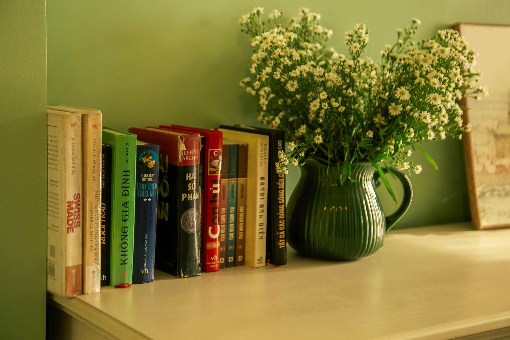
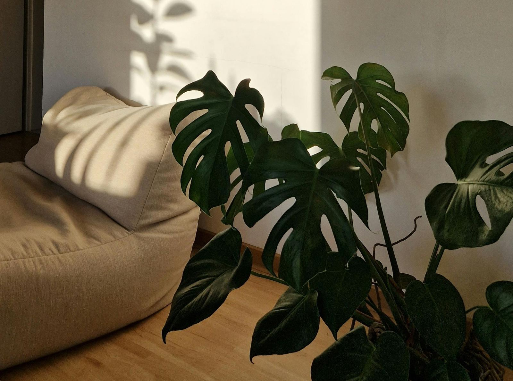

I used to come home and feel the tightness before I'd even taken off my shoes. Not because anything was wrong, exactly — but because the space wasn't working with me. It was just there, full of things I hadn't quite decided about, lit in a way that made everything feel slightly grey, holding the low hum of everything I hadn't dealt with yet.
It took me longer than I'd like to admit to understand that the problem wasn't the square footage. I kept thinking: when I have more space, I'll feel more at ease. When I move somewhere bigger, the feeling will shift. But the feeling was never really about size. It was about intention — or the lack of it.
A sanctuary isn't a room type. It isn't a floor plan. It's what happens when a space has been made deliberately for the person living in it. And you can create that in 40 square metres or 400. The method is the same. What changes is only the scale.

The feeling of spaciousness has almost nothing to do with actual space — and everything to do with what you choose to keep.
Start by removing, not adding
The first instinct when a space feels wrong is to fix it by adding something. A new lamp. A candle. A plant. A rug that might pull it all together. I've done this. Most of us have. And sometimes it helps — but only if the underlying issue isn't clutter, chaos, or things that don't belong.
The most transformative thing I did in my own home wasn't buying anything. It was walking through each room and asking a single question: does this belong here, or did it just end up here? The difference between those two things is enormous, and most spaces are full of the second kind — objects that arrived and never really got decided about.
When you remove what doesn't belong, something quiet opens up. The space starts to breathe. And in a small home, that breathing room is everything. You're not decorating for a magazine. You're editing for your nervous system.
Let light do the heavy lifting
I became obsessed with light relatively late, and I'm still a little frustrated that nobody told me sooner. Light is the most powerful free thing in your home. The way a room is lit changes how it feels more than almost any other variable — and in a small space, it matters even more.
Overhead lighting is almost always the enemy of atmosphere. It flattens everything and makes small rooms feel clinical. What works instead: lamps at varying heights, light sources you can dim, and the deliberate use of natural light throughout the day. I started leaving my curtains open in the morning not just for light but for the quality of that light — the way it moves across a wall, the way it changes the colour of everything it touches.
Candles count too. Not as a spa cliché, but as a genuine way of signalling to yourself that the day has changed. One candle, lit at a specific time, becomes a ritual that tells your body: you're home now, you can soften.
You're not decorating for a magazine. You're editing for your nervous system — and a space that restores you is always the more intentional one.
Anchor your senses, not just your eyes
We talk about interiors almost exclusively in visual terms — colour, shape, proportion. But what makes a space feel like a sanctuary isn't really what you see. It's what you feel the moment you walk in. And that feeling is largely built through the senses your eyes can't access: scent, texture, sound, temperature.
I have one scent that I use only at home. Not a cleaning product, not a candle I'd light anywhere — a diffuser blend that I've never used anywhere else. Over time, my body has learned to associate that smell with being home, being safe, being allowed to rest. It sounds small. It isn't. Scent is the fastest route to the nervous system and the most underused tool in how we design our lives.
Texture does something similar. Rough linen, soft wool, the cool weight of a ceramic mug — these small physical experiences accumulate. A throw you actually love, rather than one that was on sale. Cushions that feel right when you lean into them. The goal isn't luxury. The goal is the sensation of being held by your own space.

Texture and warmth do more for a small space than almost any piece of furniture. The goal is the sensation of being held.
One living thing
I'm not going to tell you to fill your home with plants unless you actually want to care for them. But I will say this: one living thing changes the energy of a space in a way that's hard to explain and easy to feel. A plant on a shelf, a simple stem in a glass, a small pot on a windowsill — something that grows, that needs tending, that is alive.
There's something about the presence of a living thing that makes a home feel inhabited rather than just occupied. It introduces a gentle, natural rhythm into a space that might otherwise feel static. And for small homes especially, where every object carries weight, choosing something living over something decorative is almost always the more nourishing choice.
Protect the empty space
This is the hardest one, because it goes against everything we've been taught about making a space feel finished. We're conditioned to fill empty walls, to cover surfaces, to have something in every corner. But in a small home — in any home — empty space isn't absence. It's where the room gets to breathe.
The most calming rooms I've ever been in had something in common: they had more negative space than objects. The walls had room to exist. The surfaces had room to be seen. There was a quality of pause built into the design — and that pause is what the nervous system actually rests in.
Protecting that space means resisting the impulse to add when the impulse arises. It means choosing one beautiful object over three acceptable ones. It means trusting that less can hold more feeling than more ever will.
Make one ritual that is yours alone
A sanctuary isn't just about how a space looks or feels when you enter it. It's also about what you do there. The rituals that happen in a space are as much a part of it as the walls and the light — maybe more.
I have a corner of my home that I go to every morning before anything else. It's not a room. It's a chair, a specific lamp, a small table. The ritual is simple: I sit there, I have something warm to drink, and I don't look at my phone. That's it. But that corner, because of that ritual, has become the most restorative square metre in my entire home. It holds something. Not because of what it looks like — but because of what I've given it.
You get to decide what your space holds. That decision isn't made with furniture. It's made with attention, with time, with the small repeated choice to come back to a place and be quiet in it.
Your home is already enough.
It doesn't need to be bigger. It needs to be more deliberately yours — edited, softened, and given the chance to hold you the way a sanctuary should.